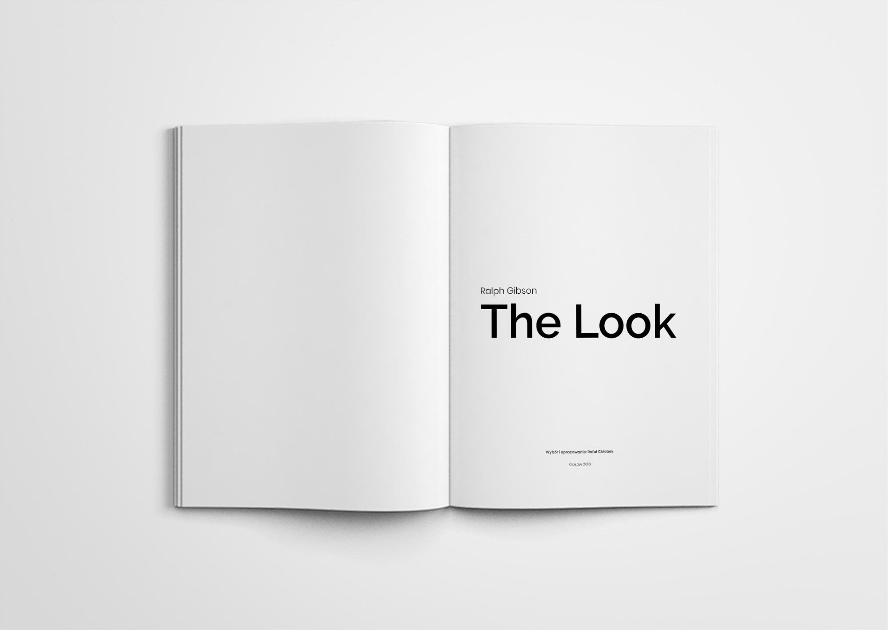
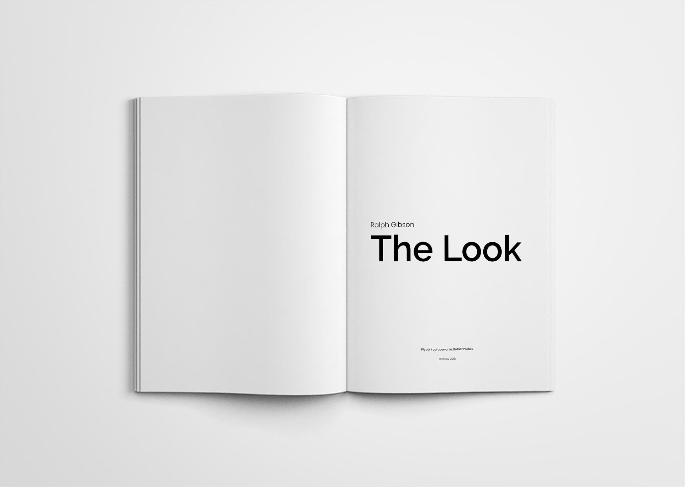

Ralph Gibson
Projekt albumu fotograficznego Ralpha Gibsona
Ralph Gibson - jest amerykańskim artystą fotografikiem znanym ze swych albumów fotograficznych. Jego zdjęcia często zawierają podtekst erotyczny i tajemniczy, budują w sobie narracyjny sens przez konceptualizm i zestawienie surrealistyczne.

Kilka słów o projekcie
Ralph Gibson - jest amerykańskim artystą fotografikiem znanym ze swych albumów fotograficznych. Jego zdjęcia często zawierają podtekst erotyczny i tajemniczy, budują w sobie narracyjny sens przez konceptualizm i zestawienie surrealistyczne.


 
